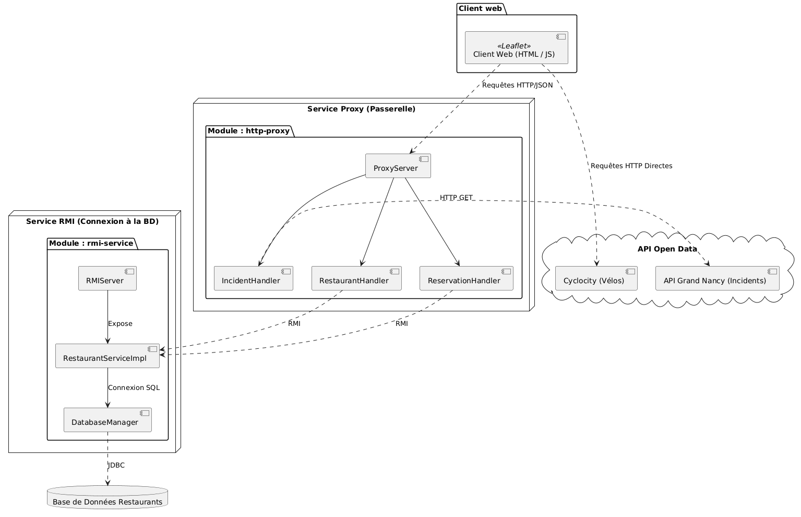
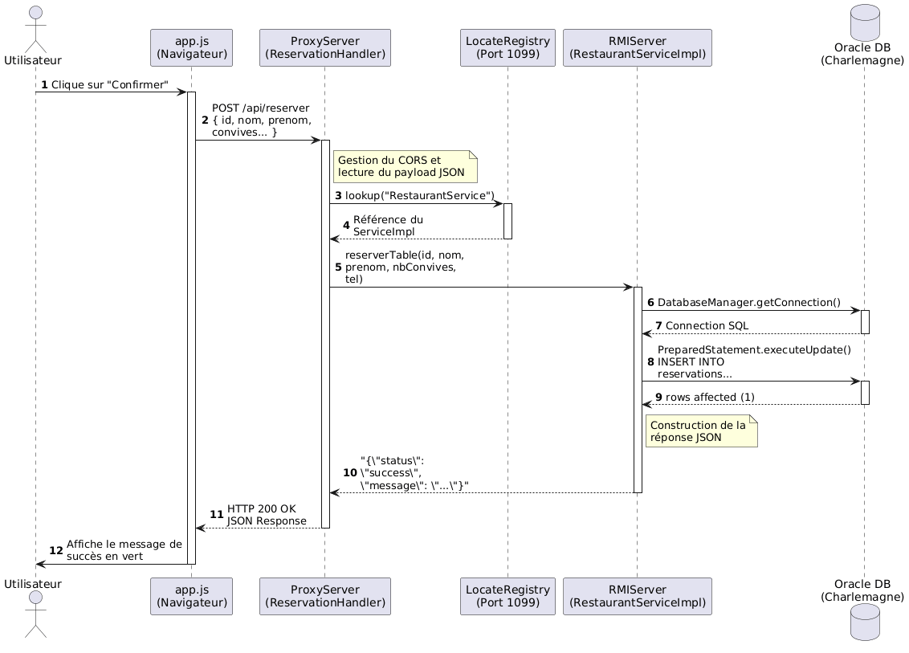

BODAT Emilien - DI RENZO VILLER Aurelio
S4RA-IL2


Les instructions détaillées de compilation (Maven / JDK) et d'exécution sur les environnements Windows et Ubuntu sont documentées dans le fichier README du projet.
L'intégralité du code source est accessible sur notre dépôt : Lien vers le dépôt Git
Est-ce responsable d'ainsi contourner la politique de sécurité du navigateur ?
Oui, dans le cadre du pattern d'architecture Backend-For-Frontend, cette approche est totalement responsable. La politique CORS (Cross-Origin Resource Sharing) est une sécurité stricte côté client (le navigateur) empêchant un script d'interroger un domaine tiers non autorisé. En utilisant notre Proxy HTTP Java comme intermédiaire, c'est notre serveur qui interroge l'API Waze, et non le navigateur. Les requêtes serveur à serveur n'étant pas soumises au CORS, la donnée est récupérée légitimement puis retransmise à notre interface Web. Cela permet de centraliser, contrôler et sécuriser les échanges réseau sans exposer directement la logique applicative au client.